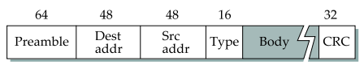

计算机网络：LAN
Ethernet
以太网，IEEE 802.3 标准，是目前应用最普遍的局域网技术。
Medium Access Control (MAC)
媒体接入控制，是数据链路层的子层，用于控制信道的多接入，即多个设备共享信道的情况。
Cabling
根据线缆的不同，可将 Ethernet LAN 分类。
| Ethernet Type | Cable Type | Max Distance | Nodes |
|---|---|---|---|
| 10Base5 | Thick coax | 500m | 100 |
| 10Base2 | Thin coax | 200m | 30 |
| 10Base-T | Twisted pair | 100m | 1024 |
| 10Base-F | Fiber optics | 2000m | 1024 |
等等。
Frame Format
使用了曼彻斯特编码（Manchester encoding）。

Preamble
- 7 字节用于时钟同步。
- 1 字节用于标记帧的开始。
Dest addr 和 Src addr
目的地和源的 MAC 地址。
Type
上层协议的类型。由于上层协议众多，所以在处理数据的时候必须设置该字段，标识数据交付哪个协议处理。
Address
MAC 地址是唯一的。
MAC 地址共 48 位（6 字节），以十六进制表示。
广播地址：ff:ff:ff:ff:ff:ff
多播地址：01:xx:xx:xx:xx:xx
CSMA - CD
CSMA - CD: carrier sense multiple access – collision detection.
Carrier sense
A host senses the link and can distinguish if the link is idle or busy (if there is any signal transmission going on the link or not).
Collision detect
A host listens what it is transmitting and therefore can detect if it collides with any other frame transmitted by some other host.
Transmit Algorithm
发送方在发送帧前对线路进行侦听，若线路忙或发生碰撞时，会持续侦听，若发现不忙则立即发送。
若在发送数据过程中检测到碰撞，则进行如下碰撞处理操作：
发送特殊阻塞信息并立即停止发送数据：特殊阻塞信息是连续几个字节的全 1 信号，此举意在强化碰撞，以使得其它设备能尽快检测到碰撞发生。
采用截断二进制指数避退算法（exponential backoff algorithm）进行发送。即十次之内等待前一次最大等待 slot 个数的两倍之内（[0, 2i - 1]）的随机个 slot 再发送，十次后则等待前一次最大等待 slot 个数内（[0, 210 - 1]）的随机个 slot 再发送。一个 slot 通常是 51.2μs。尝试 16 次之后仍然失败则放弃发送。
例子：
1st collision: wait for n slots where n is chosen randomly from the interval [0, 1]
2nd collision: wait for n slots where n is chosen randomly from in the interval [0, 3]
ith collision: wait for n slots where n is chosen randomly from interval [0, 2i - 1] (i <= 10) or [0, 210 - 1] (i > 10)
Give up after 16 tries
Bus-based LAN
- Bus configuration
- Traditional Ethernet
- All hosts share the total capacity
- One station transmits, others receive
- Cable cut disconnects the network
Hub-based LAN
- Star configuration
- When a frame is received on a port, the hub copies it to all the other ports
- All hosts share the total capacity
- One host transmits, others receive
- Half duplex
- Hub can recognize a malfunctioning host that jams the network and remove it from the network
- Cable cut does not disconnect the network
Switch-based LAN
- Star configuration
- Store and Forward Packet Switch, use buffer to keep the excess frames
- More than one pair can communicate simultaneously
- Full duplex
- Switch with N 10-Mbps ports: total capacity can reach to N*10 Mbps
- Cable cut does not disconnect the network
Extended LAN
Extended LAN: interconnection of two or more LANs by one or more bridges.
Learning bridges：每一个 bridge 会维护一个 forwarding table 用于记录哪个端口可以到达哪个 host。这是一个动态学习的过程。每当有一帧传入，它就会记录下源 host 与该端口的对应关系，如果目标 host 在表中存在，那么就转发至目标端口，否则会转发至所有其它端口。
为了防止 loop 的出现，需要用到 spanning tree algorithm。
 wechat
wechat alipay
alipay